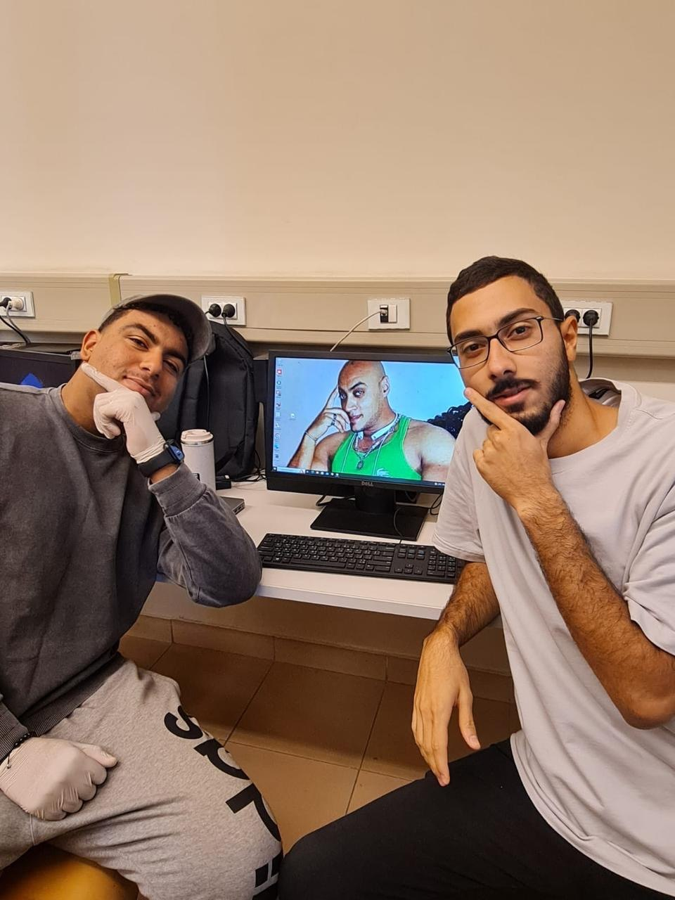

S&P 500 Portfolio Diversification Analysis — March 2023 to March 2026
Incrementally constructed from 1 to 25 stocks, ranked by Coefficient of Variation for optimal selection.
Portfolio 5 achieves the lowest CV of 7.029 — the best risk-adjusted performance across all portfolios.
Standard deviation dropped from peak 0.0169 (P2) to minimum 0.0102 (P14), proving diversification works.
Technology, Financials, Healthcare, Energy, Industrials, Consumer Cyclical, Defensive, Communications & more.
Capturing the Russia-Ukraine war aftermath, Red Sea crisis, and Strait of Hormuz events.
Each stock carries equal weight (100%/n) to isolate pure diversification effects.
Started with 35 S&P 500 candidates across multiple sectors for maximum diversity.
3 years of daily closing prices (Mar 2023 – Mar 2026) from investing.com.
Calculated using Rₜ = (Pₜ - Pₜ₋₁) / Pₜ₋₁ for all stocks.
Excluded returns beyond ±30% and removed 10 stocks with negative/extreme CVs.
Ranked remaining 25 stocks by CV (lowest → highest) for portfolio construction order.
Built 25 portfolios incrementally using covariance matrices and equal weighting.
Analyzed Return, Risk (SD), and CV across all 25 portfolios to find the optimal one.
Selected from the S&P 500 across 9 sectors
SD dropped from 0.0169 to 0.0102 — a 38% reduction. Unsystematic risk was nearly eliminated by Portfolio 14.
Portfolio 5 (CV 7.03) outperformed all others. Adding more stocks with worse CVs degraded risk-adjusted returns.
After ~14 stocks, SD plateaued around 0.0105. This is market risk that cannot be diversified away.
Mean return fell 51% from peak (P2: 0.00214) to P25 (0.00104) as weaker stocks were added.
P25's CV (10.10) is worse than P1's (9.48). Full diversification hurt risk-adjusted performance with low-quality additions.
5 high-quality stocks deliver the best risk-return balance. For pure risk minimization, 14+ stocks suffice.
FINC 2101-01 — Dr. Jasmin Fouad — The American University in Cairo
Researcher
Researcher
Researcher
Researcher
Lead Investor